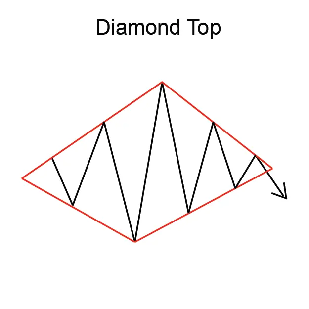
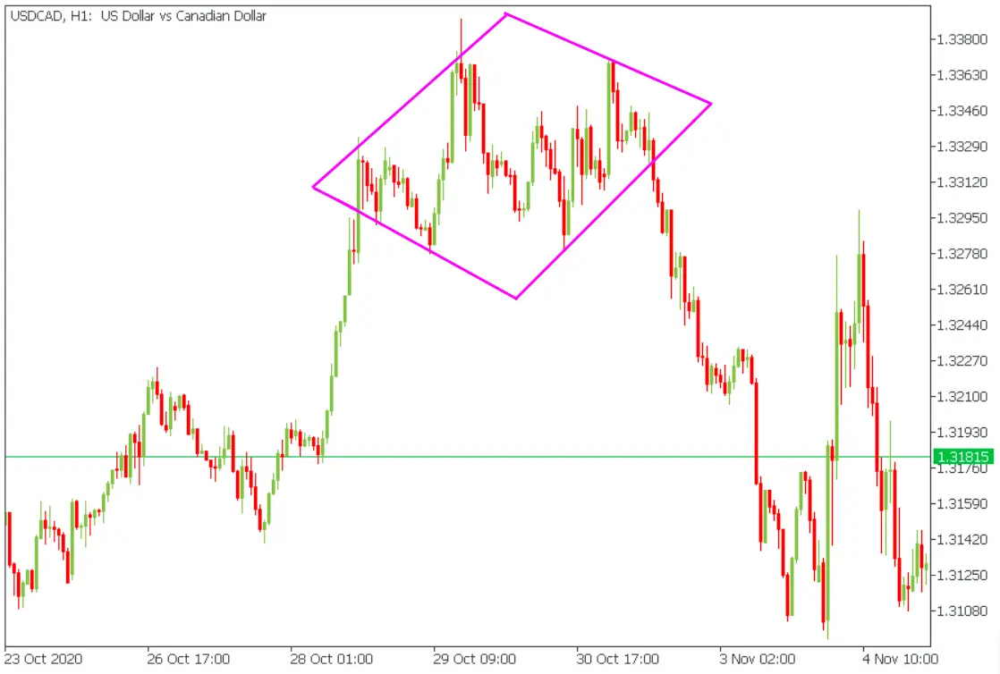

डायमंड टॉप पैटर्न एक रिवर्सल पैटर्न है जो एक ऊर्ध्वमुखी प्रवृत्ति को दर्शाता है और एक निम्नमुखी प्रवृत्ति की पहचान कराता है।
चार निम्नमुखी खाड़ और चार ऊचाई के द्वारा गठित होता है, जो हीरे की आकार को ध्यान में रखता है।
डायमंड टॉप पैटर्न की पहचान करने के लिए, ट्रेडर्स आमतौर पर चार निम्नमुखी खाड़ और चार ऊचाई ढूंढ़ते हैं।
वे देखेंगें कि खाड़ और ऊचाई एक हीरे की आकार को धारण करते हैं।
डायमंड टॉप पैटर्न एक अनिश्चित रिवर्सल पैटर्न है, लेकिन यह हमेशा सही ढंग से काम नहीं करता है। ट्रेडरों को अन्य बाजार की संकेतों,
जैसे वॉल्यूम और RSI (Relative Strength Index), को देखना चाहिए ताकि पैटर्न को सही ढंग से पहचाना और
लाभदायक ट्रेड किया जा सके।
डायमंड टॉप पैटर्न को ट्रेड करने के लिए, ट्रेडर्स आमतौर पर निम्नतम सर्वोच्च स्तर पर स्टॉप-लॉस स्थापित करेंगे।
लाभ का लक्ष्य आमतौर पर हीरे के शीर्ष पैटर्न की पूरी निम्नता होगी।
